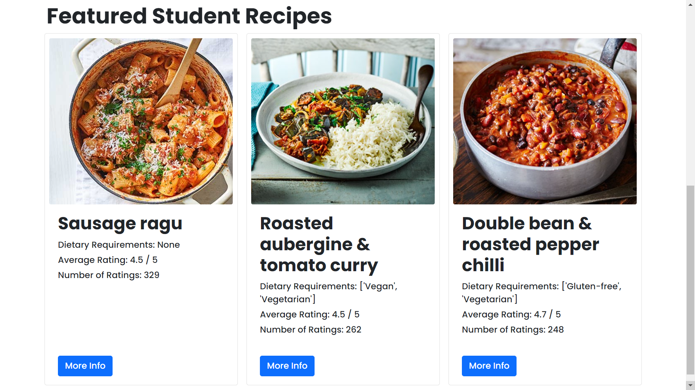
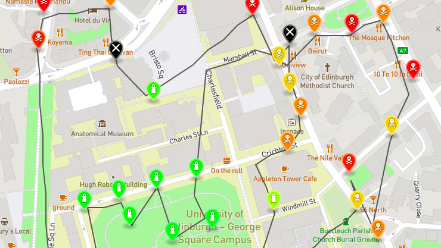
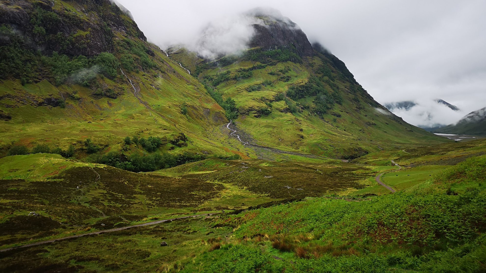
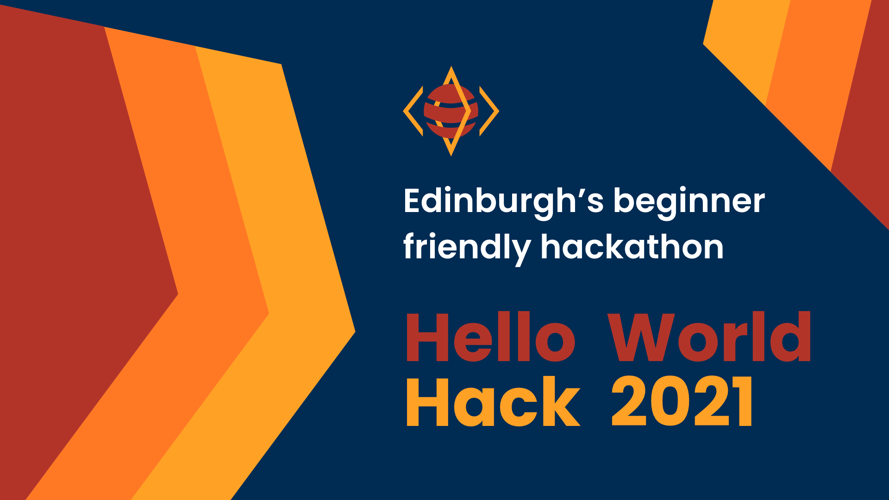

Projects
My projects include not only in-depth university coursework, but also passionate side-projects which clearly showcase my strong interests in web application development and software engineering. Other interests include computer security and computer vision.
Dissertation Project - JustCookStudent
September 2021 - April 2022
A self-proposed final year honours project is about Designing and Implementing a Personalized Food Recipe Platform for University Students using Web Data Extraction. Technologies included HTML,CSS,and JavaScript for the front-end. Regarding the back-end, Python was used for scraping food recipe websites and MongoDB was used to store data. An in-depth explaination of the project is announced in my 40-page dissertation report, such as background literature review.
Informatics Large Practical Coursework #2
September 2020 - December 2020
Created a Java program for an autonomous drone which (fictiously) collects readings from air quality sensors around the University of Edinburgh area. The challenge is to collect those readings within 150 moves or less, and without flying into No-Fly-Zones and the drone flight path must be within a certain area.
Software Testing Practical
February 2021 - March 2021
Went software bug-hunting and demonstrated automated testing techniques using EvoSuite to find additional software bugs. Practiced Test-Driven Development (TDD) technique to further improve software development skills.
Computer Security Coursework #2
February 2021 - March 2021
Gained practical experience into an introduction to cryptography and learned the ideas of crafting a man-in-middle attack using existing Python libraries and functions.
Dissertation Project - JustCookStudent
September 2021 - April 2022
A self-proposed final year honours project is about Designing and Implementing a Personalized Food Recipe Platform for University Students using Web Data Extraction. Technologies included HTML,CSS,and JavaScript for the front-end. Regarding the back-end, Python was used for scraping food recipe websites and MongoDB was used to store data. An in-depth explaination of the project is announced in my 40-page dissertation report, such as background literature review.
Informatics Large Practical Coursework #2
September 2020 - December 2020
Created a Java program for an autonomous drone which (fictiously) collects readings from air quality sensors around the University of Edinburgh area. The challenge is to collect those readings within 150 moves or less, and without flying into No-Fly-Zones and the drone flight path must be within a certain area.
Hello World Hackathon
October 2019 - February 2021
As Tech Lead, I worked with team of nine to develop University of Edinburgh's annual beginner-friendly hackathon details, which received over 200 applicants. This responsive website was designed and implemented with HTML, CSS, JavaScript and BootStrap. I additionally created last year's hackathon website and responsible for the administration of the hackathon's Discord server.
Computer Security Coursework #2
February 2021 - March 2021
Gained practical experience into an introduction to cryptography and learned the ideas of crafting a man-in-middle attack using existing Python libraries and functions.
Untitled Recipe Project
February 2020 - Present